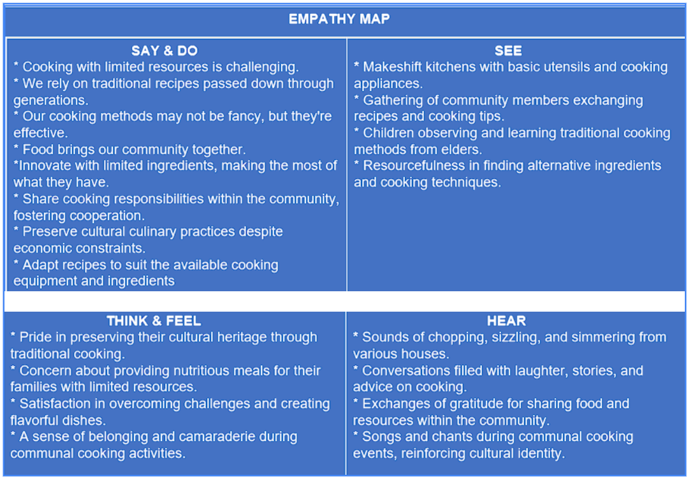
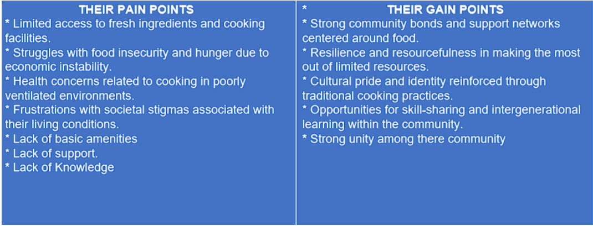
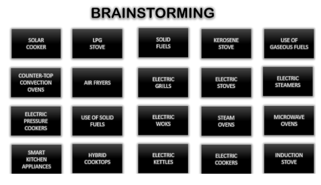
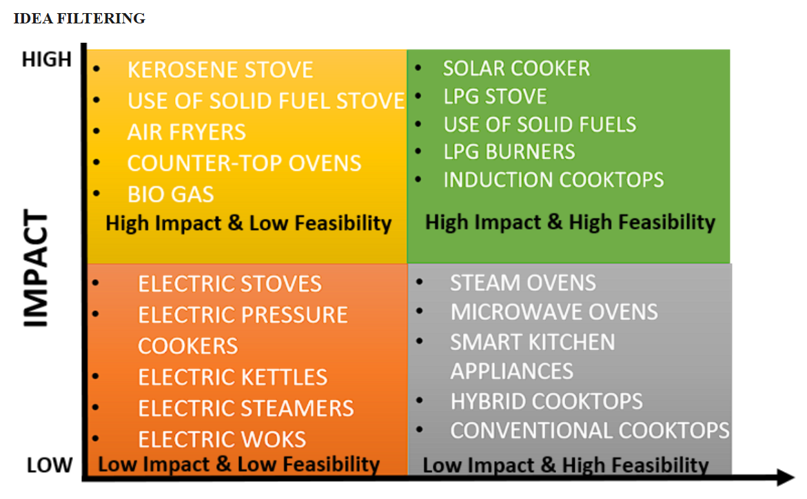
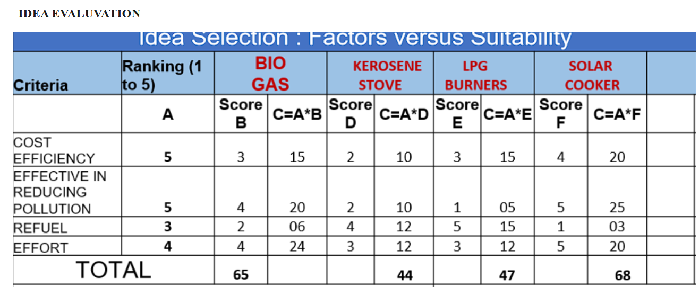
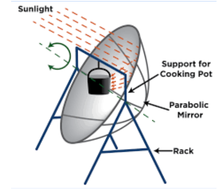
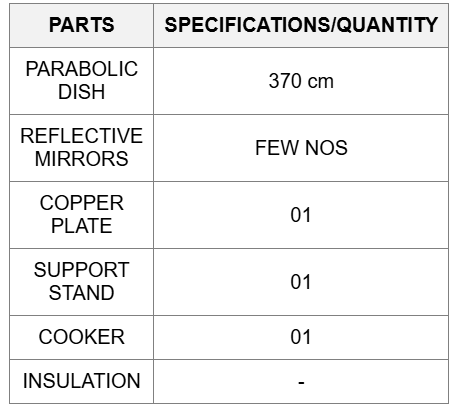

System Thinking helps manage the inherent complexity of digital intiatives by breaking down systems into
manageable chunks and understanding the relationships between them. System thinking emphasizes the importance of
feedback loops and an iterative approach. System thinking creates an imperative for collaboration across
different team members.In a summary, System thinking is a vital tool for social innovators tackling complex
challenges. it enables a more comprehensive understanding of interconnected elements, manages complexity, avoids
unintended consequences, and drives the collaboration for genuin, lasting change.
Activity 1 :
Reflection on activity 1 :
1. IDENTIFIED VARIABLES WITHIN THE GIVEN SYSTEM ARE:
Solar Irradince
Reflector geometry
ABSORBER PROPERTIES
INSULATION EFFECTIVENESS
COOKING LOAD
REFLECTOR MATERIAL
2. ANALYSIS OF THE RELATIONSHIP BETWEEN THESE VARIABLES ARE:
Solar Irradiance vs. Reflector Geometry:
The amount of solar radiation captured depends heavily on the reflector size, shape and orientation
Larger reflectors can concentrate more sunlight onto the cooking vessel
The reflector curvature/geometry determines how well the sunlight is focused
Proper alignment with the sun's position is crucial for maximizing irradiance
Absorber Properties vs. Cooking Load:
→The material and design of the absorber influences how well it can absorb and retain heat
→Dark, matt surfaces tend to absorb sunlight better than shiny surfaces
→Higher thermal mass absorbers can cook larger food loads by storing more heat
→The food type, quantity and starting temperature affect the energy needs
Insulation vs. Thermal Losses:
→Effective insulation reduces conductive, convective and radiative heat losses
→This allows the cooker to reach and maintain higher interior temperatures
→However, too much insulation can inhibit sunlight transmission to the absorber
Cooking Load and Reflector Material:
→For larger cooking loads or higher temperature requirements, a reflector material with high reflectivity is
essential to concentrate as much solar energy as possible onto the cooking vessel or absorber.
→Reflectors made of materials with lower reflectivity may not be able to concentrate sufficient solar energy for
larger cooking loads, leading to longer cooking times or incomplete cooking.
3.IMPLICATIONS OF THE PLACES CAUSAL LOOP:
1.ENVIRONMENTAL IMPLICATIONS:
→ Reduced carbon emissions: Solar cookers do not rely on fossil fuels or other non-renewable energy sources, thereby
reducing greenhouse gas emissions and contributing to a cleaner environment.
2.ECONOMIC IMPLICATIONS:
→ Fuel savings: By harnessing free solar energy, solar cookers can significantly reduce or eliminate the need for
purchasing cooking fuels, saving money for households and communities.
3.SOCIAL IMPLICATIONS:
→ Improved health: The absence of smoke and harmful emissions from solar cookers can reduce the risk of respiratory
diseases and improve overall health, particularly for women and children who are often exposed to indoor air
pollution from traditional cooking methods.
4.WHAT DID WE LEARN FROM THE ACTIVITY:
Reinforcing and Balancing Loops
Key Variables and their Relationships
Delays and Nonlinearities
leverage Points
Stakeholder Perspectives
5.PROBLEMS FACED DURING THIS ACTIVITY:
The problems faced during this activity are
→ Identifying all relevant variables
→ Determining variable relationships
→ Quantifying relationships
→ Incorporating feedback loops
→ Stakeholder perspectives
→ Data availability and quality
6. HOW WAS THIS ACTIVITY HELPFUL FOR THE COURSE PROJECT:
Problem framing and system understanding
Identifying leverage points
Anticipating unintended consequences
Stakeholder engagement and communication
Scenario planning and risk management
Facilitating systems thinking
Knowledge sharing and capacity building IDENTIFIED
Empathy
Empathy in the context of slum communities using traditional cooking methods that lead to air pollution and
health issues involves understanding and sharing the feelings, experience and putting ineself in the shoes of
those affected, acknowledging thier struggles, and recognizing the impact of thier living conditions on thier
health and well being. In short Empathy in the field of slum communities using traditionalcooking methods to
cook food involves a deep understanding of the challenges faced by the slum people, a genuine concern for thier
well-being, and a commitment to developing solutions that address thier needs while respecting thier cultural
practices and living conditions.
Social Problem Articulation
Empathy Map


Pov Statement
“The People of vantamuri slum are very less accessible to the basic needs of life. They use Traditional methods
of cooking food which causes a lot of health issues and also indoor and outdoor air pollution. Therefore by our
idea we can reduce the pollution and also increase thee sustainability of life also this could be a awareness
also to reduce pollution.”
Generating Solution For Socail Problem



Finalise

Developing Solution For Social Challenge

Sustainibility FOr Social Challenge
1.TRIPLE BOOTOM LINE:
FUNCTIONS:
Uses the energy of direct sunlight to heat, cook, or pasteurize food and drink
COST & TECHNOLOGY:
Ranges from inexpensive, low-tech devices to as powerful or expensive as traditional stoves
ENVIRONMENTAL BENEFITS:
Solar cookers reduce pollution and health implications caused by the traditional methods of cooking
2.SCALABILITY AND ADAPTABILITY:
STANDARDIZATION & MASS PRODUCTION:
Standardizing the design and manufacturing process of solar cookers can significantly reduce production costs and increase efficiency. Mass production can be achieved through partnerships with local industries or international manufacturers, ensuring a consistent supply of solar cookers to meet the demands of a larger population.
MODULAR DESIGN AND EXPANDIBILITY:
Designing solar cookers with modular components can facilitate easy expansion and upgrade of the systems as needed. This approach allows for the addition of more solar panels, heat storage, or cooking surfaces, making the system more resilient to changing circumstances.
COMMUNITY BASED MAINTAINANCE AND REPAIR:
Establishing a network of community-based maintenance and repair services can ensure that solar cookers remain functional and efficient over time. This approach not only reduces the need for external support but also fosters a sense of community ownership and responsibility.
SCALABLE AND LOCALISED PRODUCTION:
Encouraging localized production of solar cooker components, such as panels or heat storage materials, can reduce transportation costs and increase the availability of spare parts. This approach can also promote economic development in the regions where the solar cookers are used.
GOVERNMENT AND COMMUNITY SUPPORT:
Securing government and community support for solar cooker initiatives can provide the necessary resources, infrastructure, and policy frameworks for large-scale implementation. This can involve partnerships with local governments, NGOs, or community organizations to promote the adoption and maintenance of solar cookers
3.LONG TERM VIABILITY:
DURABILITY AND MAINTAINANCE:
Solar cooker claim to have a long lifespan without maintenance. This durability is crucial for long-term viability as it reduces the need for frequent repairs or replacements
COST EFFECTIVENESS:
The cost Solar cookers is expected to decrease with scaled-up manufacturing, offering a payback time of one to two years. This cost-effectiveness is essential for sustained adoption and affordability over the long term.
TECHNOLOGICAL ADVANCEMENTS:
Advancements in solar cooking technology, such as the integration of thermal energy storage, have addressed previous limitations like slow cooking times and weather dependency. These improvements enhance the practicality and efficiency of solar cookers, contributing to their long-term viability.
ENVIRONMENTAL IMPACT:
Solar cookers offer a sustainable and environmentally friendly cooking solution by reducing greenhouse gas emissions and indoor air pollution. Their long-term viability is closely linked to their positive environmental impact and contribution to mitigating climate change
CONCLUSION:
the long-term viability of solar cookers is promising when considering factors such as durability, cost-effectiveness, technological advancements, user behavior, environmental impact, and community engagement. By addressing these aspects, solar cookers can continue to offer a sustainable and effective cooking solution for communities, contributing to a greener and healthier future
4.PARTNERSHIPS:
PARTNERSHIPS WITH ORGSNIZATIONS & RESEARCHERS:
Solar Cookers International (SCI) is the leader in connecting solar cooking researchers, non-profit organizations, manufacturers, and distributors. SCI maintains a database of solar cooking information, organizes global conferences, and facilitates communication and collaboration among its partners.
COLLABORATION WITH LOCAL PARTNERS:
SCI works with local partners globally to address health and energy needs in various populations and environments. For instance, SCI has Kenyan partners who educate people about the benefits of solar cooking and distribute solar cookers to vulnerable populations.
VOLUNTEER & INTERNSHIP OPPORTUNITIES:
SCI offers various volunteer and internship opportunities, both in-person and virtual, locally and internationally. These opportunities include coordinating focus group discussions, contributing to feasibility studies, market assessments, and roadmaps, and helping to keep content up to date on the organization's websites and social media platforms.
Learning Reflection
The learning reflection of digital thinking for social innovation involves a systematic process of reflection and analysis to identify the effectiveness of design thinking in addressing social challenges.
EMPATHY :
Understanding the needs, emotions, and perspectives of the users and stakeholders involved in the social innovation project. This step helps in identifying the root causes of the problem and the opportunities for improvement.
DEFINING THE PROBLEM:
Defining the problem to be addressed, including the specific social challenge and the context in which it occurs. This step ensures that all stakeholders are aligned on the problem and its scope.
IDEATION:
Generating a wide range of possible solutions to the problem, considering diverse perspectives and ideas. This step fosters creativity and encourages out-of-the-box thinking.
PROTOTYPING & TESTING:
Creating prototypes of the solutions and testing them with the target users to gather feedback and refine the design. This step ensures that the solutions are practical and effective in addressing the social challenge.
IMPLEMENTATION & EVALUVATION:
Implementing the designed solutions and evaluating their effectiveness in addressing the social challenge. This step involves measuring the impact of the solutions and identifying areas for improvement.
REFLECTION:
Reflecting on the process and outcomes of the design thinking approach, identifying what worked well and what did not, and adapting the approach as needed for future projects.
SYSTEM THINKING:
Considering the social challenge within the broader context of the system and the interrelated factors that influence it. This step helps in identifying leverage points for change and creating systemic solutions.
CONCLUSION:
By following these steps, the learning reflection of digital thinking for social innovation can lead to the development of effective and sustainable solutions that address complex social challenges. DTSI helps in better understanding of the social problems and gives a motivation to think out of the box and come out with a solution which is feasible for the social problem.
 Design Thinking For Social Innovation(DTSI)
Design Thinking For Social Innovation(DTSI)